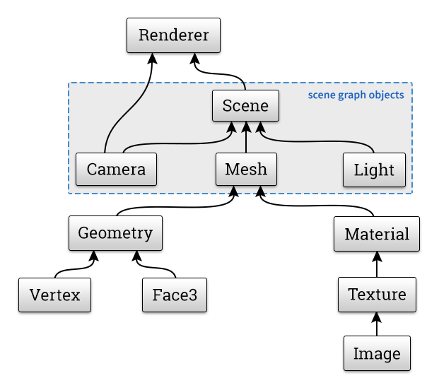
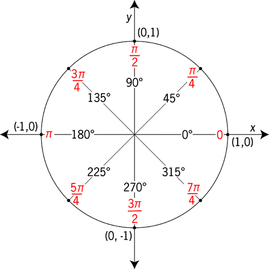
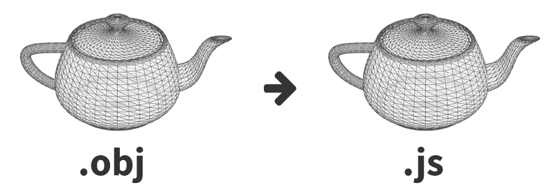

three.js快速入门
认识WebGL
WebGL是一种3D绘图标准，这种绘图技术标准允许把JavaScript和OpenGL ES 2.0结合在一起，通过增加OpenGL ES 2.0的一个JavaScript绑定，WebGL可以为HTML5 Canvas提供硬件3D加速渲染，这样Web开发人员就可以借助系统显卡来在浏览器里更流畅地展示3D场景和模型了，还能创建复杂的导航和数据视觉化。
浏览器支持

three.js
<script src="js/three.min.js"></script>
基于 WebGL 的 3D 引擎
渲染模式: WebGL, <canvas>, <svg>, CSS3D / DOM
主要功能：Scenes(场景), Cameras(摄像机), Renderers(渲染器),
Geometry(几何图形), Materials(材质), Lights(光源),
3D Model(3D模型), 3D Model Animations(模型动画),
Particles(粒子), Shaders(着色器), Math Utilities

一个简单的例子
// scene: 显示容器，类似于 html 里的 body, 或者 flash 里的 stage
var scene = new THREE.Scene();
// camera: 摄像机，确定投影视角，将三维场景投影到成可显示的二维图像
var camera = new THREE.PerspectiveCamera( 75, window.innerWidth / window.innerHeight, 0.1, 1000 );
// renderer: 渲染器，结合camera将scene的内容绘制到屏幕上
var renderer = new THREE.WebGLRenderer();
renderer.setSize( window.innerWidth, window.innerHeight );
document.body.appendChild( renderer.domElement ); // 将canvas元素添加到dom树中一个简单的例子
// Geometry：几何图形
var geometry = new THREE.BoxGeometry( 1, 1, 1 );
// Material： 材质
var material = new THREE.MeshNormalMaterial();
// Mesh： 图形网格，基本的3D显示对象，继承 Object3D
var cube = new THREE.Mesh( geometry, material );
scene.add( cube ); // 添加到显示列表
一个简单的例子
camera.position.z = 5; // 调整摄像机的视角
var render = function () {
requestAnimationFrame( render );
cube.rotation.x += 0.1; // 执行旋转的动画
cube.rotation.y += 0.1;
renderer.render( scene, camera ); // 渲染到屏幕
};
render(); // 开始逐帧渲染 输出的结果
Scene Graph
基于Object3D的显示列表
// 类似于dom的树型结构
var group1 = new THREE.Object3D();
var group2 = new THREE.Object3D();
scene.add( group1 );
scene.add( group2 );
group1.add( mesh1 );
group2.add( mesh2 );
group1.children // 子节点集合：[ mesh1 ]
group2.parent // 父节点：sceneObject3D 属性
position: Vector3(x, y, z)
rotation: Vector3(x, y, z)
scale: Vector3(x, y, z)
Object3D Transform变换
mesh.position.x = 0mesh.position.x = -100mesh.scale.set(2,2,2)mesh.rotation.y = Math.PI / 4mesh.rotation.y = Math.PI * 5 / 4Unit Circle

mesh.rotation.y = THREE.Math.degToRad(45);Unit Circle
mesh.position.x = Math.cos( time );
mesh.position.y = Math.sin( time );Cameras
cam = new THREE.PerspectiveCamera( fov, aspect, near, far )cam = new THREE.PerspectiveCamera( fov, aspect, near, far )cam = new THREE.PerspectiveCamera( fov, aspect, near, far )camera.fov = 15camera.fov = 60camera.far = 1000camera.far = 3000camera = new THREE.OrthographicCamera( left, right, top, bottom, near, far );Camera 控制器
OrbitControls
controls = new THREE.OrbitControls( camera );
function render() {
requestAnimationFrame( render );
controls.update();
renderer.render( scene, camera );
}controls.noPan = true;
controls.noZoom = true;
controls.noRotate = true;
controls.minDistance
controls.maxDistance
controls.minPolarAngle
controls.maxPolarAngleGeometry
Geometry
var geo = new THREE.BoxGeometry( width, height, depth );var geo = new THREE.SphereGeometry( 60, 24, 16 );var geo = new THREE.CylinderGeometry( ... );var geo = new THREE.TorusGeometry( ... );Materials
Materials
var material = new THREE.MeshBasicMaterial({ ... });var material = new THREE.MeshLambertMaterial({ ... });var material = new THREE.MeshPhongMaterial({ ... });var material = new THREE.MeshNormalMaterial({ ... });var material = new THREE.MeshNormalMaterial({ ... });Material Properties
shading: THREE.SmoothShadingshading: THREE.FlatShadingshading: THREE.FlatShading // face normalsshading: THREE.FlatShading // face normalsshading: THREE.SmoothShading // vertex normalscolor: 0xaaaaaacolor: 0x3794cfshininess: 40shininess: 80wireframe: truetransparent: true, opacity: 0.5UVs
Texture Mapping
texture = THREE.ImageUtils.loadTexture("color-map.jpg");map: texturenormalMap: texturespecularMap: texturemap: colorMap, specularMap: specMap, normalMap: normalMapvar material = new THREE.MeshPhongMaterial({
color: 0xaaaaaa,
ambient: 0xaaaaaa,
specular: 0x333333,
shininess: 15,
map: colorMap,
specularMap: specMap,
normalMap: normalMap
});Lights
Lights
light = new THREE.DirectionalLight( 0xdddddd, 0.8 );light.position.set( -80, 80, 80 );light.position.x = 80;light.target.position = 160;light.position.x = -80;light = new THREE.DirectionalLight( 0xdddddd, 0.8 );light = new THREE.DirectionalLight( 0xb4e7f2, 0.8 );light = new THREE.DirectionalLight( 0xb4e7f2, 0.2 );light = new THREE.DirectionalLight( 0xb4e7f2, 1.5 );light = new THREE.DirectionalLight( 0xb4e7f2, 0.8 );light = new THREE.PointLight( 0xb4e7f2, 0.8 );light = new THREE.PointLight( 0xb4e7f2, 0.8 );light = new THREE.SpotLight( 0xb4e7f2, 0.8 );light.angle = Math.PI / 9;light.angle = Math.PI / 5;light.exponent = 10;light.exponent = 1;light.exponent = 20;light = new THREE.AmbientLight( 0x444444 );light = new THREE.AmbientLight( 0x000000 );light = new THREE.AmbientLight( 0x444444 );Three Point Lighting
Key, Fill, Rim
Key, Fill, Rim
Model Converter
OBJ to JSON converter python tool
/three.js/utils/converters/obj/convert_obj_three.py

python convert_obj_three.py -i teapot.obj -o teapot.jsModel Loader
var loader = new THREE.JSONLoader();
loader.load("teapot.js", function( geometry, materials ) {
material = new THREE.MeshFaceMaterial( materials );
mesh = new THREE.Mesh( geometry, material );
scene.add( mesh );
});Model Animation 模型动画
var loader = new THREE.JSONLoader();
loader.load("teapot.js", function( geometry, materials ) {
material = new THREE.MeshFaceMaterial( materials );
mesh = new THREE.Mesh( geometry, material );
scene.add( mesh );
});Interaction 交互操作
// normalized device coordinates
mouse.x = ( event.clientX / window.innerWidth ) * 2 - 1;
mouse.y = - ( event.clientY / window.innerHeight ) * 2 + 1;
raycaster = new THREE.Raycaster();
var vector = new THREE.Vector3( mouse.x, mouse.y, 1 ).unproject( camera );
raycaster.set( camera.position, vector.sub( camera.position ).normalize() );
var intersects = raycaster.intersectObjects( scene.children );
INTERSECTED = intersects[ 0 ].object;Particles 粒子
var loader = new THREE.JSONLoader();
loader.load("teapot.js", function( geometry, materials ) {
material = new THREE.MeshFaceMaterial( materials );
mesh = new THREE.Mesh( geometry, material );
scene.add( mesh );
});Shaders 着色器
var loader = new THREE.JSONLoader();
loader.load("teapot.js", function( geometry, materials ) {
material = new THREE.MeshFaceMaterial( materials );
mesh = new THREE.Mesh( geometry, material );
scene.add( mesh );
});Thanks davidscottlyons.com/threejs
/